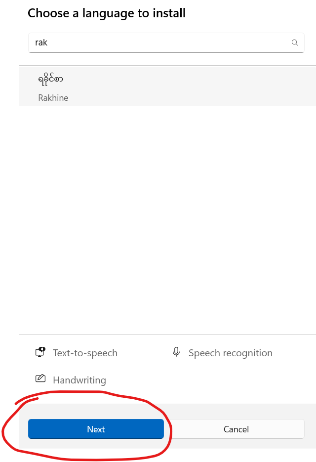

Windows သုံးရေလူတိအတွက် ရခိုင်ဘာသာ ကီးဘုတ်ထည့်သွင်းဖို့ဆိုကေ Search ဘားမှာ edit language and keyboard options ဆိုပနာ ရှာလိုက်ပါ။
နောက်တနည်းကတော့ခါ Start > Settings > Time & language > Language & region ဆိုပနာ အဆင့်ဆင့်လားလိုက်ကေလည်း ရပါရေ။
ပြီးကေ Add a language ကို နိပ်ပါ
Choose the language နိန်ရာမှာ Rakhine လို့ရိုက်ထည့်လိုက်ပါ
ရခိုင်စာကို ရွီးပါ။ Next ဆက်နိပ်ပါ

Install ဆက်နိပ်ပါ
အောက်မှာ Rakhine လို့ ပေါ်နိန်ကေ ရပါရာ။
ကီးဘုတ်နီရာ လားပြီးကေ ရခိုင်ဘာသာ ရွီးချယ်ပနာ အသုံးလို့ ရပါရာ။